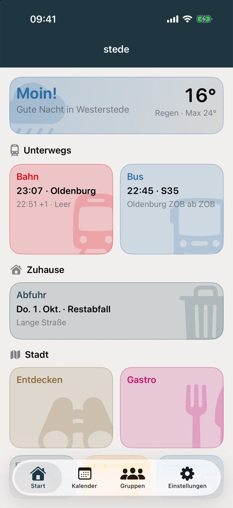
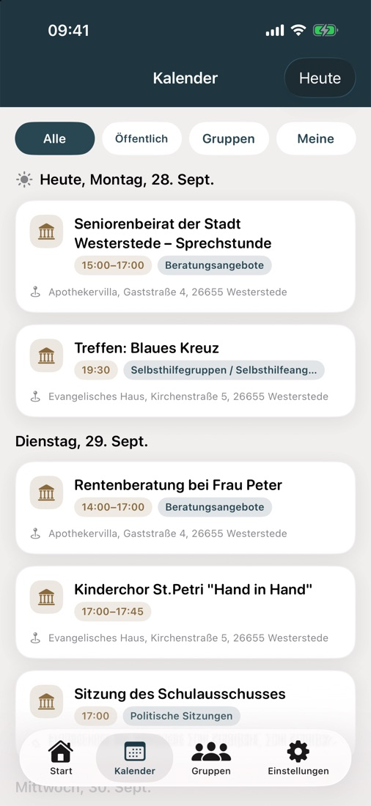
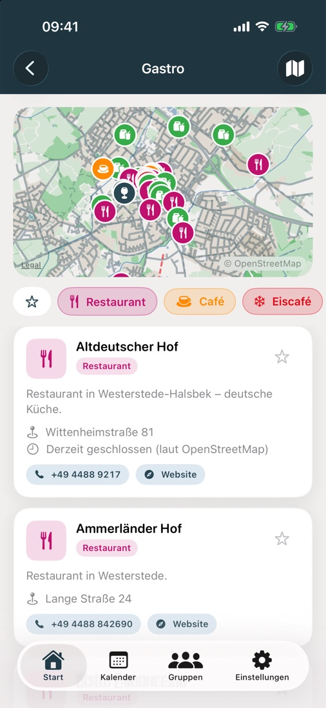
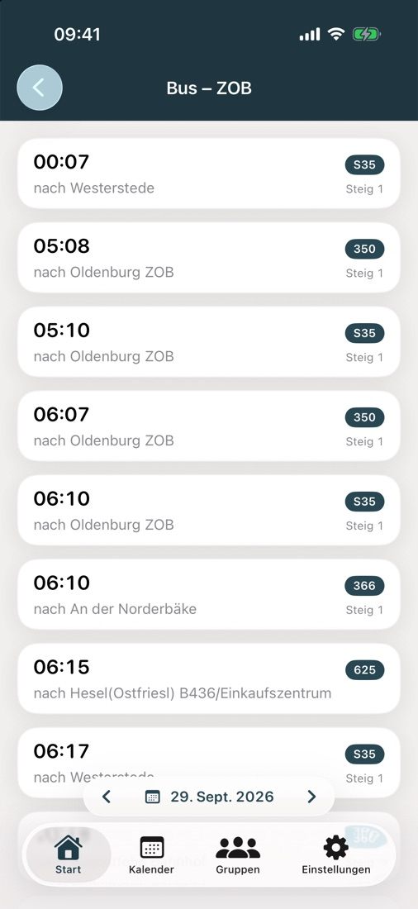
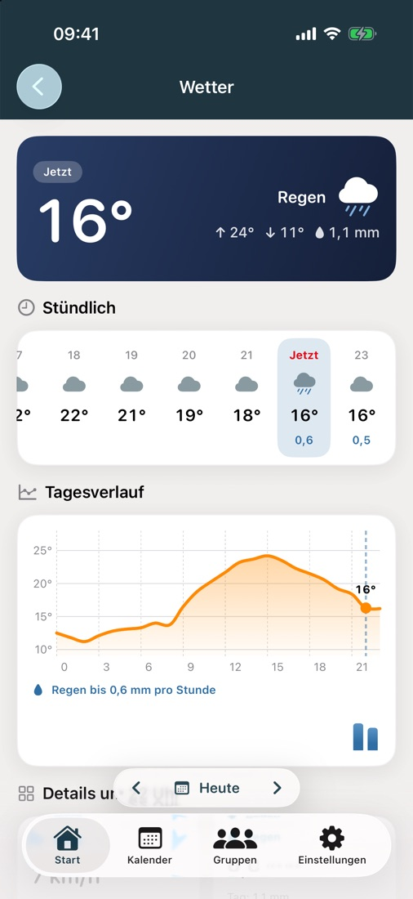
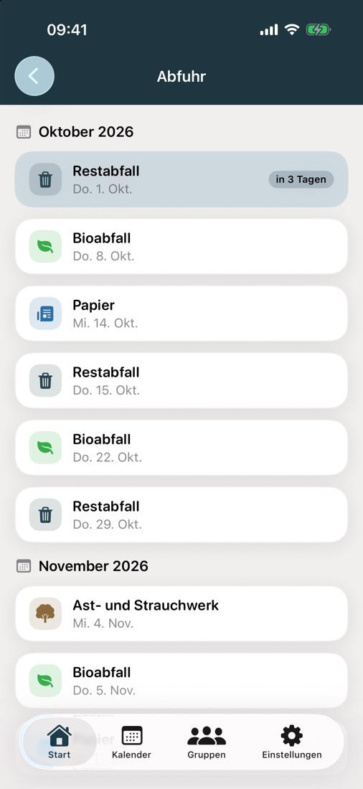
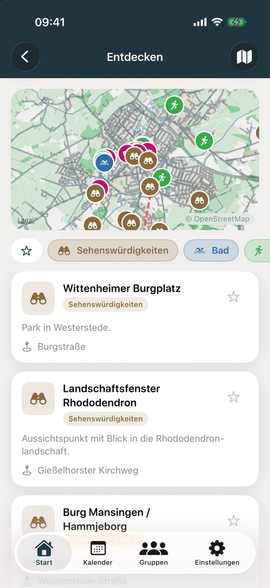
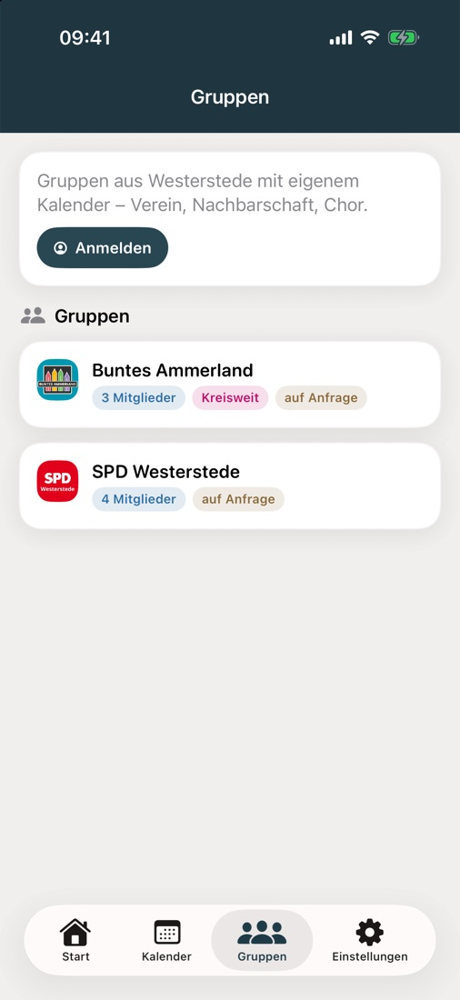

Die Ortsapp fürs Ammerland: Bahn, Bus, Termine, Müllabfuhr, Wetter, Gastro und Gruppen – für Westerstede, Bad Zwischenahn, Edewecht, Rastede, Wiefelstede und Apen.








stede bündelt, was man im Alltag in seiner Gemeinde nachschaut, in einer einzigen App: Wann fährt der nächste Zug, wann kommt der Bus, wann wird die Tonne geleert, was ist heute los – und wo kann man essen gehen. Dazu kommen Gruppen für Vereine, Nachbarschaften und Initiativen mit eigenem Kalender, Umfragen und Aufgaben. Alle Zeiten gelten in deutscher Zeit, egal wie das Telefon eingestellt ist.
Beim ersten Start wählst du deine Gemeinde im Ammerland: Westerstede, Bad Zwischenahn, Edewecht, Rastede, Wiefelstede oder Apen. Bahnhof, Bushaltestellen, Abfuhrstraßen, Orte, Karte und Veranstaltungen passen sich an. Wechseln geht jederzeit unter Einstellungen → Gemeinde.
Die Startseite zeigt auf einen Blick das Wetter, die nächsten Abfahrten von Bahn und Bus, den nächsten Abfuhrtermin deiner Straße und die Bereiche der Stadt. Reihenfolge der Abschnitte, Reihenfolge der Kacheln und welche Kacheln überhaupt erscheinen, stellst du unter Einstellungen → Startseite anpassen selbst ein.
Straße wählen – und stede zeigt alle Termine für Restabfall, Bioabfall, Papier, Gelben Sack, Ast- und Strauchwerk und Problemstoffe, Monat für Monat. Der nächste Termin steht direkt auf der Startseite („in 3 Tagen“). Straßen mit mehreren Abfuhrbezirken fragen den Abschnitt gleich mit ab.
Aktuelle Temperatur, Regen, Höchst- und Tiefstwerte, der stündliche Verlauf, die Temperaturkurve des Tages und weitere Details für deine Gemeinde – mit Daten des Deutschen Wetterdienstes. Auch hier blätterst du in die nächsten Tage.
Vereine, Chöre, Nachbarschaften und Initiativen bekommen in stede einen eigenen Bereich. Eine neue Gruppe gibt die Gemeinde frei, danach verwaltet sie sich selbst.
Für die Gruppen brauchst du ein Konto. Die Anmeldung läuft per E-Mail-Link, ohne Passwort. Das Konto lässt sich in der App jederzeit vollständig löschen. Alles andere in stede funktioniert ohne Konto.
Keine Werbung, kein Tracking, keine Analyse-Werkzeuge, keine In-App-Käufe. Ohne Konto speichert stede nichts über dich. Mit Konto liegen nur Anzeigename, optional ein Profilbild, deine Mitgliedschaften, was du in Gruppen selbst schreibst und – wenn du Benachrichtigungen erlaubst – eine Gerätekennung für den Versand auf einem Server in der EU.
Fahrplandaten von DB IRIS (über dbf.finalrewind.org) und dem VBN-Fahrplaner, Abfuhrtermine von appfuhr.de, Veranstaltungen von den Websites der Gemeinden und des Ammerland-Tourismus, Wetter von Bright Sky / Deutscher Wetterdienst, Orte und Karte aus OpenStreetMap (© OpenStreetMap-Mitwirkende). Alle Angaben ohne Gewähr. stede ist ein privates Projekt und keine offizielle App einer Gemeinde.
iOS in der TestFlight-Beta, Android als Beta-APK. Kostenlos. Zugang per E-Mail anfragen.